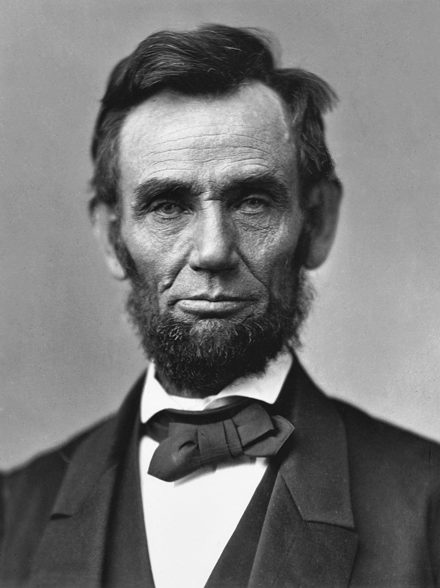
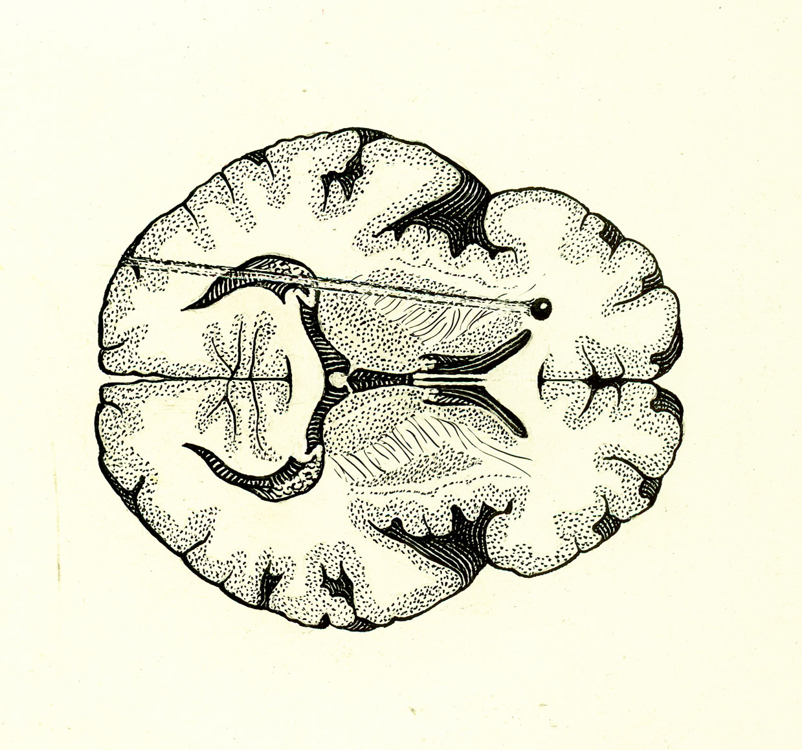
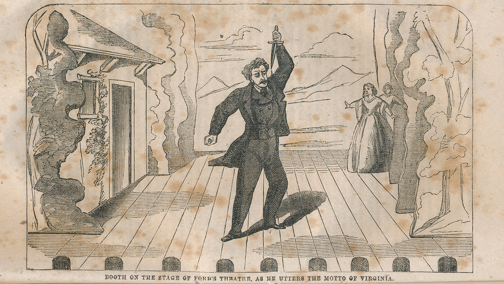

Who was Abraham Lincoln?

Abraham Lincoln was born on February 12, 1809, in Hodgenville, Kentucky. He grew up on the frontier with little formal education but a love for reading. He would spend nights reading and being red-eyed throughout the day. Early in his career, he co-owned a general store for several years, until he eventually sold his stake to serve as a militia captain in the Black Hawk War. Although he did not see direct combat, the sight of all the corpses surrounding the battlefield impacted him greatly. As a captain, he developed a reputation for pragmatism and integrity. Following the war, Lincoln studied law and campaigned for a seat on the Illinois State Legislature. He was denied on his first attempt and was later elected in 1834 to serve as a Whig.
Abraham Lincoln met Mary Todd in Springfield, Illinois, where he was practicing as a lawyer. They were married in 1842 over her family’s objections and had four sons. Only one lived to adulthood. There was a deep melancholy within his family that was mostly sourced from the death he experienced,
In the 1850s, Lincoln began focusing on his law practice. He eventually joined the Republic Party in 1856 and built himself as a prominent figure in society through debates with Stephen A. Douglas over the topic of slavery. Lincoln’s anti-slavery platform made him extremely unpopular with Southerners, and his nomination for President in 1860 enraged them.
On November 6, 1860, Lincoln won the presidential election without the support of a single Southern state. Talk of secession became more serious as time went on. Although it wasn’t the entire cause, Lincoln’s election into office caused a major shift into the following year, when the Civil War broke out.
Lincoln’s decision to fight wasn’t about slavery, but about preserving the Union. In his first inaugural address, he urged Southern states to stay, ending with the question, “Shall it be peace, or the sword?”
The war began on April 12, 1861, when Confederate forces fired on Fort Sumter. Lincoln had tried sending supplies, but the South attacked, forcing the Union to surrender. He struggled to find reliable generals until Ulysses S. Grant rose to command. After the Union victory at Antietam, Lincoln issued the Emancipation Proclamation on January 1, 1863. It freed slaves only in rebel states but shifted the war’s purpose. Lincoln won re-election in 1864 as Union victories boosted morale. In his second inaugural, he claimed “malice toward none” and aimed to reunite the nation. The war ended only a month after the speech. Following the war, the Lincoln Administration created a series of policies, such as The Revenue Act of 1862. This was conducted in order to stabilize the United States and help the nation grow politically, economically, and socially.
On April 14, 1865, Abraham Lincoln was shot by actor and confederate sympathizer John Wilkes Booth. The assassination was a part of the plan to destroy the Northern government. The Secretary of State was left injured, and the President died the day after.
Abraham Lincoln met Mary Todd in Springfield, Illinois, where he was practicing as a lawyer. They were married in 1842 over her family’s objections and had four sons. Only one lived to adulthood. There was a deep melancholy within his family that was mostly sourced from the death he experienced,
In the 1850s, Lincoln began focusing on his law practice. He eventually joined the Republic Party in 1856 and built himself as a prominent figure in society through debates with Stephen A. Douglas over the topic of slavery. Lincoln’s anti-slavery platform made him extremely unpopular with Southerners, and his nomination for President in 1860 enraged them.
On November 6, 1860, Lincoln won the presidential election without the support of a single Southern state. Talk of secession became more serious as time went on. Although it wasn’t the entire cause, Lincoln’s election into office caused a major shift into the following year, when the Civil War broke out.
Lincoln’s decision to fight wasn’t about slavery, but about preserving the Union. In his first inaugural address, he urged Southern states to stay, ending with the question, “Shall it be peace, or the sword?”
The war began on April 12, 1861, when Confederate forces fired on Fort Sumter. Lincoln had tried sending supplies, but the South attacked, forcing the Union to surrender. He struggled to find reliable generals until Ulysses S. Grant rose to command. After the Union victory at Antietam, Lincoln issued the Emancipation Proclamation on January 1, 1863. It freed slaves only in rebel states but shifted the war’s purpose. Lincoln won re-election in 1864 as Union victories boosted morale. In his second inaugural, he claimed “malice toward none” and aimed to reunite the nation. The war ended only a month after the speech. Following the war, the Lincoln Administration created a series of policies, such as The Revenue Act of 1862. This was conducted in order to stabilize the United States and help the nation grow politically, economically, and socially.
On April 14, 1865, Abraham Lincoln was shot by actor and confederate sympathizer John Wilkes Booth. The assassination was a part of the plan to destroy the Northern government. The Secretary of State was left injured, and the President died the day after.
The Conspiracy to Undermine the Government

John Wilkes Booth was a Maryland native, born in 1838 into a family of noted actors.
Although he remained in the north during the war, becoming a successful actor, as the war entered its final stages, he and several associates hatched a plot to kidnap the president and take him to Richmond, the Confederate capital. On March 20, 1865, the day of the planned kidnapping, Abraham Lincoln failed to appear at the spot where Booth and his six conspirators lay in wait, foiling their planned abduction. Soon after, Richmond fell into Union control. Booth would come up with an even more sinister plan to save the Confederacy.
On the evening of April 14, 1865, just five days after Confederate General Robert E. Lee’s surrender, President Abraham Lincoln attended a performance of “Our American Cousin” at Ford’s Theatre in Washington, D.C. Lincoln occupied a private box above the stage with his wife Mary Todd Lincoln, a young army officer named Henry Rathbone and Rathbone’s fiancé, Clara Harris, the daughter of New York Senator Ira Harris.
Booth and his co-conspirators believed the simultaneous assassination of Lincoln, Vice President Andrew Johnson and Secretary of State William H. Seward (the president and two of his possible successors) would throw the U.S. government into disarray. At approximately 10:15 PM, Booth slipped into the president’s box. As the audience erupted in laughter, he fired a .44-caliber single-shot derringer into the back of Lincoln’s head from just inches away.
Booth proceeded to slash Major Rathbone’s shoulder with a knife before leaping from the box to the stage below. It was noted that he shouted “Sic semper tyrannis!”, Latin for “Thus always to tyrants!”, before running off the stage in hot pursuit with a broken leg. He was able to flee on horseback. Initially, many in the crowd thought the act was a part of the play, until Mary Lincoln’s scream revealed the severity of the situation.
A young doctor, Charles Leale, was in the audience and rushed to Lincoln’s side. He found the president paralyzed and barely breathing. Soldiers carried Lincoln across the street to a boarding house, where doctors determined the wound was fatal. President Lincoln died at 7:22 AM the next morning, April 15, 1865, at the age of 56. News of his death spread rapidly, sending the nation into shock and sorrow. His final words had been “She won't think anything about it”, which he had said in response to his wife who asked what their guest, Clara Harris, might think about them holding hands.
At almost the same moment Booth fired the fatal shot, his accomplice, Lewis Powell (alias Lewis Paine, Lewis Payne), attacked Lincoln's Secretary of State, William Henry Seward, at his home on Lafayette Square. Seward lay in bed, recovering from a carriage accident. Powell entered the mansion, claiming to have a delivery of medicine from the secretary's doctor. Seward's son, Frederick, was brutally beaten while trying to keep Powell from his father's door. Powell slashed the secretary's throat twice, then fought his way past Seward's son Augustus, an attending hospital corps veteran, and a State Department messenger. Powell escaped into the night, believing his deed complete. However, a metal surgical collar saved Seward from certain death.
George Atzerodt, who had been assigned to assassinate Vice President Andrew Johnson, had rented a room directly above Johnson’s at The Kirkwood House in room 124. He had prepared a loaded gun, ready to assassinate the government official. Despite his preparations, he had lost his nerve (mainly due to the plan changing from kidnapping to murder) and drank heavily at the hotel's bar, wandering the streets of the city through the night.
Although he remained in the north during the war, becoming a successful actor, as the war entered its final stages, he and several associates hatched a plot to kidnap the president and take him to Richmond, the Confederate capital. On March 20, 1865, the day of the planned kidnapping, Abraham Lincoln failed to appear at the spot where Booth and his six conspirators lay in wait, foiling their planned abduction. Soon after, Richmond fell into Union control. Booth would come up with an even more sinister plan to save the Confederacy.
On the evening of April 14, 1865, just five days after Confederate General Robert E. Lee’s surrender, President Abraham Lincoln attended a performance of “Our American Cousin” at Ford’s Theatre in Washington, D.C. Lincoln occupied a private box above the stage with his wife Mary Todd Lincoln, a young army officer named Henry Rathbone and Rathbone’s fiancé, Clara Harris, the daughter of New York Senator Ira Harris.
Booth and his co-conspirators believed the simultaneous assassination of Lincoln, Vice President Andrew Johnson and Secretary of State William H. Seward (the president and two of his possible successors) would throw the U.S. government into disarray. At approximately 10:15 PM, Booth slipped into the president’s box. As the audience erupted in laughter, he fired a .44-caliber single-shot derringer into the back of Lincoln’s head from just inches away.
Booth proceeded to slash Major Rathbone’s shoulder with a knife before leaping from the box to the stage below. It was noted that he shouted “Sic semper tyrannis!”, Latin for “Thus always to tyrants!”, before running off the stage in hot pursuit with a broken leg. He was able to flee on horseback. Initially, many in the crowd thought the act was a part of the play, until Mary Lincoln’s scream revealed the severity of the situation.
A young doctor, Charles Leale, was in the audience and rushed to Lincoln’s side. He found the president paralyzed and barely breathing. Soldiers carried Lincoln across the street to a boarding house, where doctors determined the wound was fatal. President Lincoln died at 7:22 AM the next morning, April 15, 1865, at the age of 56. News of his death spread rapidly, sending the nation into shock and sorrow. His final words had been “She won't think anything about it”, which he had said in response to his wife who asked what their guest, Clara Harris, might think about them holding hands.
At almost the same moment Booth fired the fatal shot, his accomplice, Lewis Powell (alias Lewis Paine, Lewis Payne), attacked Lincoln's Secretary of State, William Henry Seward, at his home on Lafayette Square. Seward lay in bed, recovering from a carriage accident. Powell entered the mansion, claiming to have a delivery of medicine from the secretary's doctor. Seward's son, Frederick, was brutally beaten while trying to keep Powell from his father's door. Powell slashed the secretary's throat twice, then fought his way past Seward's son Augustus, an attending hospital corps veteran, and a State Department messenger. Powell escaped into the night, believing his deed complete. However, a metal surgical collar saved Seward from certain death.
George Atzerodt, who had been assigned to assassinate Vice President Andrew Johnson, had rented a room directly above Johnson’s at The Kirkwood House in room 124. He had prepared a loaded gun, ready to assassinate the government official. Despite his preparations, he had lost his nerve (mainly due to the plan changing from kidnapping to murder) and drank heavily at the hotel's bar, wandering the streets of the city through the night.
The Runaway

Over 10,000 federal police officers, troops, and detectives were involved in tracking down and capturing John Wilkes Booth after the assassination of Lincoln. There was a $100,000 bounty placed on his head, making this one of the most notorious manhunts in the nation’s history.
Booth escaped out the back door of Ford’s Theatre. He jumped onto a rented horse and rode hastily out of Washington. Around 35 minutes later, at 11:00 PM, he approached the Navy Yard Bridge. Booth introduced himself with his real name to Sergeant Silas Tower Cobb, who allowed him to pass through Maryland, unknown to the ongoing chase. Cobb claimed that Booth was a proper person to pass, despite the bridge being closed after 9:00 PM. Soon after, David Herold, one of his fellow accomplices, followed onto the bridge and is allowed passage.
After leaving Washington, the two finally met at Surratt’s Tavern, where they picked up supplies and weapons stored there weeks prior to the assassination. John Minchin Lloyd, a police officer who occupied and leased the tavern, later testified against the conspirator Mary Surratt as a key witness. Booth supposedly boasted about the assassination to him, which Lloyd made note of during the trial.
On April 15th at 4:00 AM, Booth, and Herold arrived at Dr. Samuel Alexander Mudd’s house in Waldorf, Maryland, where Dr. Mudd set Booth’s broken leg. In his note to investigators, he claimed that he did not know who the two assailants were. He was told that they were from St. Mary’s Co. and one of them had fallen off of their horse and broken their leg. It needed to be tended to immediately because they needed to get to Washington as fast as possible. The doctor laid Booth down on a sofa and later took him to a room where it was not-so-thoroughly examined, as the men had wanted it tended to as soon as possible. Booth and Herold took refuge at the home until between 4:00 PM and 5:00 PM.
They eventually made their way to the Potomac River toward Virginia. Another conspirator and Confederate sympathizer, Thomas A. Jones, hid the fugitives in a pine thicket nearby his Maryland home until it was safe to cross into Virginia. Jones had instructed Henry Woodland, A laborer working for Thomas Jones, to leave a boat nearby another resident’s home. Supposing that it was an innocent act, he did as he was commanded. A detective arrived on the property to see the boat, which was now gone. As Jones revealed in his statement in the trial, he had assisted Booth and Herold with acquiring a boat and took only 18 dollars, the price of the boat. Booth had offered to pay more, but Jones did not want the money. Rather, he wanted to see the Confederacy succeed.
Booth and Harold set out for Virginia at sunrise. However, harsh winds and flooding prevailed. The two had steered off-course and managed to sail right back into Maryland territory, by Nanjemoy Creek. At Sundown, they had attempted to cross again, this time successfully reaching Mathias Point, Virginia. Elizabeth Quesenbury was a confederate sympathizer who used her home as a safehouse. Although she believed in the Confederate cause, Booth and Herold’s arrival made her suspicious and afraid for the lives of her family and her own. Herold had asked for assistance making it further into the country. However, she had denied helping them and later sent a signal to officers. No officer had showed up at her door to see the situation.
By the evening of April 23rd, Booth and Herold stop by Dr. Richard H. Stuart’s home, in hopes of receiving more medical attention for the leg and some rest. Stuart did not have a place for them to sleep and did not appreciate the manner in which they urged him to allow them to stay. He offered them food and in a quarter of an hour, they were out of the house. They soon made their way to the home of William Lucas, a free African American farmer nearby. Booth flaunted a knife towards the back of the freed man, threatening to harm him if they did not allow him refuge for the night and a horse in the morning. William Lucas and his wife slept outside, fearing for their lives.
Booth and Herold arrived in Port Conway, Virginia. There, they met three Confederate Soldiers. They lied to the men, claiming to be soldiers wounded in battle and needing assistance by taking them on the ferry to wherever they were headed. The soldiers did not reply to the two men. Later, Booth goes to talk to Private Willie S. Jett. He excitedly states that himself and Herold were the people who assassinated the President.
Booth and Herold were seeking refuge in a tobacco barn in Richard Garret’s farm. It was here that Federal Troops led by Sergeant Boston Corbett found them at 2:00 AM. The troops lit the barn on fire, hoping that they would surrender themselves. Herold surrendered himself, but Booth did not give up easy. Through a large crack in the barn, the Sergeant had a good view of Booth and was ready to take aim. He fired the carbine, which struck Booth in the neck, right behind the ear. The bullet exited higher up on the other side of his head. John Wilkes Booth lived until 7:00 AM.
Booth escaped out the back door of Ford’s Theatre. He jumped onto a rented horse and rode hastily out of Washington. Around 35 minutes later, at 11:00 PM, he approached the Navy Yard Bridge. Booth introduced himself with his real name to Sergeant Silas Tower Cobb, who allowed him to pass through Maryland, unknown to the ongoing chase. Cobb claimed that Booth was a proper person to pass, despite the bridge being closed after 9:00 PM. Soon after, David Herold, one of his fellow accomplices, followed onto the bridge and is allowed passage.
After leaving Washington, the two finally met at Surratt’s Tavern, where they picked up supplies and weapons stored there weeks prior to the assassination. John Minchin Lloyd, a police officer who occupied and leased the tavern, later testified against the conspirator Mary Surratt as a key witness. Booth supposedly boasted about the assassination to him, which Lloyd made note of during the trial.
On April 15th at 4:00 AM, Booth, and Herold arrived at Dr. Samuel Alexander Mudd’s house in Waldorf, Maryland, where Dr. Mudd set Booth’s broken leg. In his note to investigators, he claimed that he did not know who the two assailants were. He was told that they were from St. Mary’s Co. and one of them had fallen off of their horse and broken their leg. It needed to be tended to immediately because they needed to get to Washington as fast as possible. The doctor laid Booth down on a sofa and later took him to a room where it was not-so-thoroughly examined, as the men had wanted it tended to as soon as possible. Booth and Herold took refuge at the home until between 4:00 PM and 5:00 PM.
They eventually made their way to the Potomac River toward Virginia. Another conspirator and Confederate sympathizer, Thomas A. Jones, hid the fugitives in a pine thicket nearby his Maryland home until it was safe to cross into Virginia. Jones had instructed Henry Woodland, A laborer working for Thomas Jones, to leave a boat nearby another resident’s home. Supposing that it was an innocent act, he did as he was commanded. A detective arrived on the property to see the boat, which was now gone. As Jones revealed in his statement in the trial, he had assisted Booth and Herold with acquiring a boat and took only 18 dollars, the price of the boat. Booth had offered to pay more, but Jones did not want the money. Rather, he wanted to see the Confederacy succeed.
Booth and Harold set out for Virginia at sunrise. However, harsh winds and flooding prevailed. The two had steered off-course and managed to sail right back into Maryland territory, by Nanjemoy Creek. At Sundown, they had attempted to cross again, this time successfully reaching Mathias Point, Virginia. Elizabeth Quesenbury was a confederate sympathizer who used her home as a safehouse. Although she believed in the Confederate cause, Booth and Herold’s arrival made her suspicious and afraid for the lives of her family and her own. Herold had asked for assistance making it further into the country. However, she had denied helping them and later sent a signal to officers. No officer had showed up at her door to see the situation.
By the evening of April 23rd, Booth and Herold stop by Dr. Richard H. Stuart’s home, in hopes of receiving more medical attention for the leg and some rest. Stuart did not have a place for them to sleep and did not appreciate the manner in which they urged him to allow them to stay. He offered them food and in a quarter of an hour, they were out of the house. They soon made their way to the home of William Lucas, a free African American farmer nearby. Booth flaunted a knife towards the back of the freed man, threatening to harm him if they did not allow him refuge for the night and a horse in the morning. William Lucas and his wife slept outside, fearing for their lives.
Booth and Herold arrived in Port Conway, Virginia. There, they met three Confederate Soldiers. They lied to the men, claiming to be soldiers wounded in battle and needing assistance by taking them on the ferry to wherever they were headed. The soldiers did not reply to the two men. Later, Booth goes to talk to Private Willie S. Jett. He excitedly states that himself and Herold were the people who assassinated the President.
Booth and Herold were seeking refuge in a tobacco barn in Richard Garret’s farm. It was here that Federal Troops led by Sergeant Boston Corbett found them at 2:00 AM. The troops lit the barn on fire, hoping that they would surrender themselves. Herold surrendered himself, but Booth did not give up easy. Through a large crack in the barn, the Sergeant had a good view of Booth and was ready to take aim. He fired the carbine, which struck Booth in the neck, right behind the ear. The bullet exited higher up on the other side of his head. John Wilkes Booth lived until 7:00 AM.
The Aftermath

Abraham Lincoln’s successor, Andrew Johnson, assumed office on April 15, 1865, and watched over the Reconstruction era. Secretary Seward retained his seat with the Johnson administration, and purchased Alaska from Russia in 1867. Johnson, a Congressman, former slaveholder from Tennessee, and the only Southern senator to remain loyal to the Union during the Civil War, favored lenient measures in readmitting Southern states to the Union during the Reconstruction era. He was a defender of states’ rights. He granted pardons to most former Confederates and allowed the Souther states to elect new governments. As a result, new state governments formed across the South and enacted “black codes.” These restrictive measures were designed to repress the recently freed slave population. Soon, many African Americans had little choice but to continue working on Southern plantations.
For seven weeks between May and June 1865, all eyes were on the third floor of Washington’s Old Arsenal Penitentiary–where Booth’s conspirators would be placed on trial for their lives. President Andrew Johnson and Secretary of War Edwin M. Stanton wanted to try the conspirators before a nine-member military commission, where a vote of only five of the nine judges, rather than a unanimous vote like a civilian trial, was necessary. Six votes would mean the death penalty. The Federal Authorities argued that because confederate troops were present when Washington became a war-zone, the assassination was an act of war. The opposition argued that only a civilian trial would be fair towards the defendants. Inevitably, the Military commission handled the case. The following is the verdict of each defendant:
Mary Surratt: Executed by hanging on July 7, 1865, on the charge of conspiracy. She the first woman put to death by the federal government
Lewis Powell: Executed by hanging on July 7, 1865, on the charge of conspiracy to assassinate Secretary of State William H. Seward.
David Herold: Executed by hanging on July 7, 1865, on the charge of conspiracy and aiding John Wilkes Booth’s escape.
George Atzerodt: Executed by hanging on July 7, 1865, on the charge of conspiracy to assassinate Vice President Andrew Johnson.
Samuel Mudd: Hard labor for life; He was imprisoned at Fort Jefferson and later pardoned by Andrew Johnson.
Edman “Ned” Spangler: Sentenced to six years in prison for aiding Booth’s escape (kept his horses behind the theater).
Michael O’Laughlen: Hard labor for life on the charge of conspiring to kidnap the president. He eventually stepped away from the kidnapping plot and turned himself into the authorities. He later died of yellow fever while in prison.
Samuel Arnold: Hard labor for life on the charge of conspiring to kidnap the president. He was imprisoned at Fort Jefferson and later pardoned by Andrew Johnson.
John Surratt: Unlike the other conspirators, John Surratt was given a civilian trial. The jury could not reach a verdict, and he was therefore set free. Since then, he publicly spoke about his relationship with the conspirators, arguing for his innocence.
For seven weeks between May and June 1865, all eyes were on the third floor of Washington’s Old Arsenal Penitentiary–where Booth’s conspirators would be placed on trial for their lives. President Andrew Johnson and Secretary of War Edwin M. Stanton wanted to try the conspirators before a nine-member military commission, where a vote of only five of the nine judges, rather than a unanimous vote like a civilian trial, was necessary. Six votes would mean the death penalty. The Federal Authorities argued that because confederate troops were present when Washington became a war-zone, the assassination was an act of war. The opposition argued that only a civilian trial would be fair towards the defendants. Inevitably, the Military commission handled the case. The following is the verdict of each defendant:
Mary Surratt: Executed by hanging on July 7, 1865, on the charge of conspiracy. She the first woman put to death by the federal government
Lewis Powell: Executed by hanging on July 7, 1865, on the charge of conspiracy to assassinate Secretary of State William H. Seward.
David Herold: Executed by hanging on July 7, 1865, on the charge of conspiracy and aiding John Wilkes Booth’s escape.
George Atzerodt: Executed by hanging on July 7, 1865, on the charge of conspiracy to assassinate Vice President Andrew Johnson.
Samuel Mudd: Hard labor for life; He was imprisoned at Fort Jefferson and later pardoned by Andrew Johnson.
Edman “Ned” Spangler: Sentenced to six years in prison for aiding Booth’s escape (kept his horses behind the theater).
Michael O’Laughlen: Hard labor for life on the charge of conspiring to kidnap the president. He eventually stepped away from the kidnapping plot and turned himself into the authorities. He later died of yellow fever while in prison.
Samuel Arnold: Hard labor for life on the charge of conspiring to kidnap the president. He was imprisoned at Fort Jefferson and later pardoned by Andrew Johnson.
John Surratt: Unlike the other conspirators, John Surratt was given a civilian trial. The jury could not reach a verdict, and he was therefore set free. Since then, he publicly spoke about his relationship with the conspirators, arguing for his innocence.
Quick Facts
- General Grant was supposed to attend the play at Ford’s Theater, but didn’t.
- Lincoln almost didn’t go to the theater, either.
- Secretary Seward survived thanks to a neck brace.
- Lincoln’s bodyguard was absent at a critical moment.
- The Secret Service was created the day he died.
- Booth escaped and hid for 12 days.
- Ford's Theatre was later bought by the federal government and converted into office space for the War Department.
- Mary Todd Lincoln believed that Vice President Andrew Johnson had prior knowledge of or had been involved in the assassination.
- As Booth was dying, he reportedly uttered, "Useless, useless"
- After marrying Harris, it was revealed that Rathbone most likely suffered from PTSD after his slashing. Two days before Christman in 1883, he fatally shot and stabbed his wife before stabbing himself repeatedly in a suicide attempt. Once again, he survived the knife attack and lived out the remainder of his life in an asylum for the criminally insane. Mary Todd Lincoln, Abraham Lincoln’s wife, was also admitted to the insane asylum after her son, Robert Lincoln, presented her in front of a judge to become institutionalized due to her erratic behavior.
Source
https://www.nps.gov/foth/learn/historyculture/the-lincoln-conspirators.htm
https://constitutioncenter.org/blog/the-forgotten-man-who-almost-became-president-after-lincoln
https://constitutioncenter.org/blog/10-facts-about-abraham-lincolns-assassination
https://www.battlefields.org/learn/biographies/abraham-lincoln
https://www.history.com/articles/abraham-lincoln-assassination
https://www.britannica.com/facts/assassination-of-Abraham-Lincoln
https://www.britannica.com/event/assassination-of-Abraham-Lincoln
https://www.loc.gov/collections/abraham-lincoln-papers/articles-and-essays/assassination-of-president-abraham-lincoln/
https://youtu.be/hVLM0BSqx5o
https://www.history.com/articles/how-presidential-assassinations-changed-u-s-politics
https://fords.org/lincolns-assassination/investigating-the-assassination/manhunt-for-booth/
https://fords.org/lincolns-assassination/investigating-the-assassination/the-trial-of-the-conspirators/
https://www.history.com/articles/10-things-you-may-not-know-about-the-lincoln-assassination
https://constitutioncenter.org/blog/the-forgotten-man-who-almost-became-president-after-lincoln
https://constitutioncenter.org/blog/10-facts-about-abraham-lincolns-assassination
https://www.battlefields.org/learn/biographies/abraham-lincoln
https://www.history.com/articles/abraham-lincoln-assassination
https://www.britannica.com/facts/assassination-of-Abraham-Lincoln
https://www.britannica.com/event/assassination-of-Abraham-Lincoln
https://www.loc.gov/collections/abraham-lincoln-papers/articles-and-essays/assassination-of-president-abraham-lincoln/
https://youtu.be/hVLM0BSqx5o
https://www.history.com/articles/how-presidential-assassinations-changed-u-s-politics
https://fords.org/lincolns-assassination/investigating-the-assassination/manhunt-for-booth/
https://fords.org/lincolns-assassination/investigating-the-assassination/the-trial-of-the-conspirators/
https://www.history.com/articles/10-things-you-may-not-know-about-the-lincoln-assassination